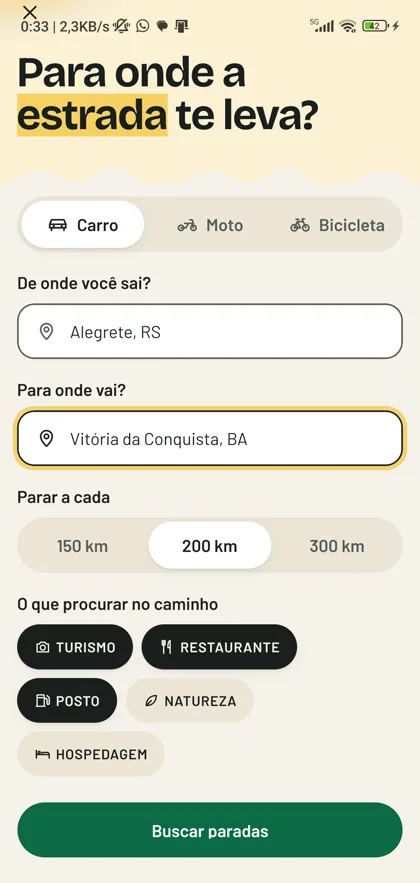
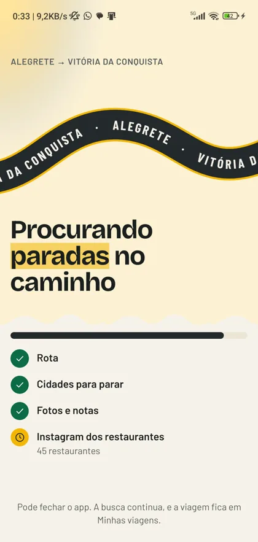
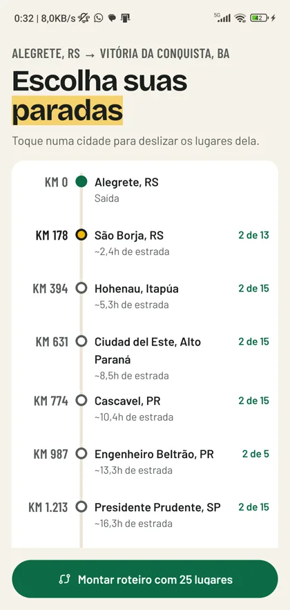
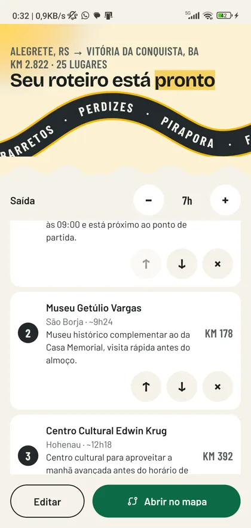
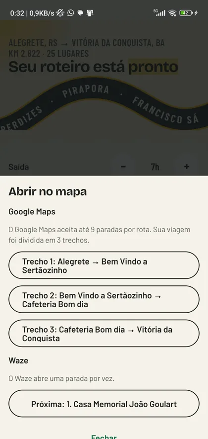

O Desvio do começo ao fim
Retrospectiva do que já foi feito (1 min 29 s)
Atualizado em 25/11: de 0:35 a 1:05 o resumo mostra o app real no celular, no lugar das telas de referência. Legendas em português ligadas por padrão. Texto das legendas: resumo e retrospectiva.
Viagem longa no Brasil é feita de estrada
Muita gente cruza estados de carro ou moto: Alegrete, no Rio Grande do Sul, até Vitória da Conquista, na Bahia, são 2.731 km, uns 35 horas de estrada. Cresce também a cicloviagem, em que cada trecho de 30 a 80 km é um dia de pedal.
Nessas viagens, as paradas fazem a experiência: onde comer bem, qual mirante vale o desvio, onde abastecer com segurança e onde dormir. Hoje essa escolha é feita às pressas, no celular, com o carro já em movimento.
de Alegrete, RS, a Vitória da Conquista, BA, a viagem que usamos de exemplo
jeitos de viajar por terra: carro, moto e bicicleta, cada um com sua rota e ritmo
tipos de parada: turismo, restaurante, posto, natureza e hospedagem
Planejar paradas exige abas demais
Quem viaja por terra planeja as paradas em várias abas: Google Maps para achar lugares, Instagram para ver se valem a pena, blogs para dicas. É lento, cansativo e não leva em conta onde a pessoa vai estar em cada horário.
O resultado é parar no primeiro posto da estrada e perder o restaurante bom a 3 km dali. Numa cicloviagem o erro custa mais caro: cada desvio são horas de pedal.
Informação espalhada
Nota, fotos, horário e Instagram ficam em lugares diferentes.
Sem noção de caminho
Os apps de mapa mostram lugares perto de você agora, não perto de onde você vai estar daqui a 300 km.
Ordem e horário
Almoço entre 11h e 14h, mirante no fim da tarde, pernoite: ninguém monta isso de cabeça.
Sugestões no caminho, decisão com um gesto, roteiro pela IA
O Desvio junta três coisas que hoje estão separadas: a rota com paradas sugeridas a cada intervalo que você escolhe, cards com foto, nota, km na rota e Instagram, e um roteiro final que a IA ordena pelo km, pelo horário e pelo seu gosto.
- Você conta a viagemOrigem, destino, veículo e de quantos em quantos km quer parar.
- O app busca as paradasCidades no caminho e os lugares de cada uma, do OpenStreetMap, do Google Maps e da Wikipedia.
- Você deslizaBora para guardar, Passo para pular, favorito para cima.
- A IA ordena o roteiroAjusta ao horário e explica cada parada numa linha. Abre no Google Maps ou no Waze.
IA com plano B
Triagem do gosto, ranqueamento e roteiro no Groq com modelos gpt-oss. Se a IA falha ou passa de 10 s, o app usa a ordem estatística, sem erro.
Coleta que não trava
A busca roda num worker com fila de jobs e mostra o progresso por etapa. Os lugares ficam em cache por 30 dias.
Gosto que aprende
Cada swipe vira dado: lugares avaliados não voltam e os novos chegam na ordem do seu gosto.
- Expo · React Native
- Python · FastAPI
- Groq · gpt-oss
- OpenStreetMap · OSRM · Nominatim
- Supabase
- GitHub Actions
Alegrete → Vitória da Conquista, do pedido ao roteiro
Esta é a saída do coletor de verdade (código da main, 24/11), sem nada editado à mão. Os problemas que ela mostra estão marcados logo abaixo, porque são o que vamos corrigir nas próximas entregas.

Nova viagem
Busca em andamento
Paradas
Roteiro da IA
Abrir no mapa
Capturas do app rodando num Android em 25/11, com a API e o worker locais. A tela de deslizar os cards ainda é provisória (#21), então os 25 "Bora" desta viagem foram gravados direto no banco: 2 lugares por cidade, os mesmos da medição.
Entrada
- De
- Alegrete, RS
- Para
- Vitória da Conquista, BA
- Veículo
- Carro
- Parar a cada
- 200 km
- Procurar
- Turismo, restaurante e posto
- Saída
- 07:00
- Gosto (triagem)
- "Gosta de natureza e de comida regional, viaja sem pressa e prefere lugares bem avaliados."
Saída: 13 paradas, 2.819 km, uns 38 h de estrada
- KM 178São Borja, RSAffamatto Pizzeria (com Instagram), Restaurante Universitário Talheres do Pampa, Casa Memorial João Goulart
- KM 394Hohenau, ParaguaiParque Ecológico Ingeniero Alfredo Sitzmann, Love Eat, Mate Bar
- KM 631Ciudad del Este, ParaguaiSaltos del Monday, Museo Mensú, Teko Cafeteria
- KM 774Cascavel, PRMonumento a Nossa Senhora Aparecida, Restaurante Popular
- KM 1.573Barretos, SPParque do Peão, Museu Histórico Ruy Menezes, Parque Municipal
- KM 2.182Pirapora, MGPonte Marechal Hermes, Barco a Vapor Benjamim Guimarães
- KM 2.567Salinas, MGMuseu da Cachaça, Cachaçaria Sabor de Minas (com Instagram)
- e mais 6 paradas, até Vitória da Conquista (Cristo, Centro de Triagem de Animais Silvestres)
Começo do roteiro que a IA montou
- Affamatto Pizzeria"Primeira parada para refeição rápida, embora a chegada seja antes do horário de almoço."
- Parque Ecológico Alfredo Sitzmann"Visita ao parque ecológico para descanso e contato com a natureza ao meio-dia."
- Saltos del Monday"Cataratas do Monday, ponto turístico principal do fim da tarde."
- Restaurante Popular, Cascavel"Jantar dentro do horário de funcionamento (10-14h)."
A rota passa pelo Paraguai
O OSRM público escolheu o caminho mais curto, por Hohenau e Ciudad del Este. Ninguém faz essa viagem com fronteira no meio: a rota precisa evitar outro país.
O roteiro se contradiz
A IA chama de jantar uma parada às 17h24 num restaurante que ela mesma diz abrir das 10h às 14h, e põe uma piscina "na madrugada". Falta pernoite: 38 h seguidas não é viagem de verdade.
Sem nota nos cards
Sem a chave da Places API, os cards vêm só do OpenStreetMap: nenhum tem nota, e só 2 das 13 paradas têm Instagram entre os 4 primeiros cards.
Dados completos: medicao-2026-11-24.json.
Primeira medição com o código real
Rodamos a viagem acima três vezes em 24/11, com o código da main (commit a002d46): uma sem cache, uma enchendo o cache com a IA ligada e uma com o cache cheio. Servidores públicos de OSRM, Nominatim e Overpass, sem Google, Groq no plano gratuito. É uma rota e um dia: os números mostram onde está o gargalo, não a média.
para a coleta inteira sem cache. A meta do PRD é o primeiro card em menos de 1 minuto.
com o cache cheio; 79 s disso são a busca de Instagram, que não fica em cache.
paradas ranqueadas pela IA; as outras 6 caíram no plano B, sem erro para a pessoa.
por viagem completa (1,1 mil por parada e 4,1 mil no roteiro). O vídeo cita 27 mil: era a estimativa de antes da medição.
Onde vai o tempo da coleta
Minutos por etapa, na mesma viagem, sem cache e com o cache cheio.
Ver a tabela
| Etapa | Sem cache | Com cache cheio |
|---|---|---|
| Rota (OSRM) | 2,3 s | 0,5 s |
| Cidades no caminho (Overpass) | 525,4 s | 0,0 s |
| Lugares das 13 cidades | 954,4 s | 15,1 s |
| Instagram dos restaurantes | 87,1 s | 78,8 s |
| Total | 1.569,2 s | 94,4 s |
Quem ordenou cada parada
As 12 paradas com 2 ou mais cards, na ordem da estrada. A IA ranqueia até 30 cards por parada; quando o limite de 8 mil tokens por minuto do plano gratuito esgota, a parada fica com a ordem estatística.
- São Borja
- Hohenau
- Ciudad del Este
- Cascavel
- Eng. Beltrão
- Pres. Prudente
- Penápolis
- Barretos
- Pirapora
- Francisco Sá
- Salinas
- Vitória da Conquista
As 6 primeiras responderam em 0,4 a 0,6 s cada. Depois delas, o limitador do próprio coletor viu que a próxima chamada passaria de 10 s de espera e usou o plano B na hora. O roteiro (gpt-oss-120b) respondeu em 2,9 s.
O que a medição muda no plano
- Mostrar os cards do OpenStreetMap antes do fim (#33): a primeira cidade fica pronta bem antes dos 26 minutos.
- Servidores próprios de OSRM e Overpass (#37): achar as cidades levou 9 minutos, e o Overpass público recusou duas rodadas por limite de uso.
- Cache do Instagram: com tudo em cache, ele é 84% do tempo.
- Rota só no Brasil e pernoite no roteiro: os dois erros do exemplo acima.
- Gabarito de paradas reais: montar à mão a lista certa para duas rotas conhecidas e medir quantos lugares o app acerta, inventa ou deixa de fora, com cada fonte e cada IA.
Três pessoas, uma estrada
A estrada do semestre
Cada entrega da disciplina fecha com a tag atividade-NN no repositório e um release com o que mudou. Eu cuido do coletor e da IA; Emilly, das telas e do design system; Guilherme, de infraestrutura, dados e qualidade.
-
A05
Fundação
EntreguePRD com 19 histórias de usuário, design system com tokens claros e escuros, telas de referência, app Expo e coletor FastAPI com testes.
-
A06
IA no Groq com plano B
Entregue- Triagem, ranqueamento e roteiro com IA, com schema estrito e limitador por modelo
- Fila de jobs e worker: a API responde na hora e o app consulta o progresso
- Verificação da stack: o Llama saiu do plano gratuito e adotamos gpt-oss
-
A07
Base: Supabase, autenticação e design system
Feita- Componentes base do design system no app
- Supabase com schema, RLS e fila de jobs no Postgres; API autenticada pelo token do Supabase
- Limitador da IA com lock e prazo total de 10 s; validação dos cards e erros sem dados internos
- Autocompletar de cidade com a lista do IBGE, sem gastar a cota do Nominatim
- Mudança de escopo: só viagens por terra, com rota própria para bicicleta
-
A08
API completa e telas no app
Feita- Viagens salvas por pessoa, progresso da busca por etapa, cache de 30 dias e uso diário do Groq
- Places API oficial no lugar do raspador do Google; exportar e apagar dados (LGPD) na API
- No app: Céu, Estrada e cards de swipe a 60 fps, login, Nova viagem, Paradas, Roteiro e abrir no Maps ou Waze
-
A09
App conectado e primeira medição
Em andamento- App falando com a API na
main: Minhas viagens, Carregando, favorito e desfazer, perfil de gosto no ranqueamento - Viagem Alegrete → Vitória da Conquista medida com o código real (veja Resultados)
- Legendas em português nos dois vídeos
- App falando com a API na
-
A10
Fechamento da Fase 1
PlanejadaSwipe com desfazer e triagem no app, build de teste no celular e uma viagem real, do login ao roteiro aberto no mapa.
-
A11
Fase 2: IA no roteiro, detalhe e perfil
PlanejadaRoteiro ajustado ao horário com explicação, detalhe do lugar, perfil de gosto e cards antes do Google chegar.
-
A12
Fim da Fase 2 e beta fechado
PlanejadaFiltros e edição do roteiro, exportar e apagar dados (LGPD) e testes com usuários.
Diário a partir de 9 de novembro
Uma entrada por semana. As semanas que passaram vêm dos commits e PRs; as próximas são o plano combinado com o grupo, uma entrega da disciplina por semana, e viram registro conforme acontecem. Atualizado em 25/11.
A07 · Base do app e do coletor
Feita- 10/11 · Emilly
- Componentes base do design system no app (Button, Chip, TextField, Segmented, Rating, Toast, BottomNav, Icon) e o catálogo
/dev/componentesnos dois temas. Entregas da disciplina no PRD. PRs #48 e #49. - 11/11 · Leonardo
- Limitador da IA com lock por modelo e prazo total de 10 s; validação dos cards sem vazar erro interno. PRs #50 e #51.
- 12/11 · Leonardo
- Mudança de escopo para viagens só por terra, com rota de bicicleta (#52). Autocompletar de cidade pela lista do IBGE (#53), progresso por etapa (#54), cards do OpenStreetMap antes do Google (#55), cache de 30 dias (#56) e uso diário do Groq (#57). Revisão e merge de #48 e #49.
- 13/11 · Leonardo
- Supabase com schema, RLS e testes das migrações; fila de jobs e decisões no Postgres; API autenticada pelo token do Supabase (#58, que fecha #1, #2 e #3).
A08 · API completa e telas no app
Feita- 17/11 · Leonardo
- Merge de #50 a #57. Projeto do Supabase criado (#66), Places API oficial no lugar do raspador do Google (#68), servidores próprios de OSRM, Nominatim e Overpass (#70), viagens guardadas por pessoa (#71), exportar e apagar dados (#72) e projeto no EAS (#74).
- 17/11 · Emilly
- Céu, Estrada, Destaque e StopItem no app (#64); SwipeCard e SwipeActions com gesto a 60 fps (#65).
- 18/11 · Emilly
- Cliente da API e estado da viagem ativa (#77); Boas-vindas e Entrar com Google, Apple e link por e-mail (#80).
- 18/11 · Guilherme
- Favorito e desfazer decisão na API (#78); perfil de gosto da triagem no ranqueamento, com cache (#79).
- 20/11 e 21/11 · Emilly
- Paradas na ordem da estrada (#82), Nova viagem (#84), Roteiro por km (#86), abrir no Maps ou Waze (#87), roteiro pela IA com explicação (#88) e editar o roteiro (#89).
- Ficou para depois
- Deploy numa VPS (#10): por enquanto tudo roda local.
A09 · App conectado e primeira medição
Esta semana- 24/11 · Leonardo
- Revisão e merge de #76, #78, #79, #81, #83 e #85, com correções: o plano B do ranqueamento não vai mais para o cache, a tela Roteiro só chama a IA quando as decisões mudam e Nova viagem oferece carro, moto e bicicleta. O app conectado à API chega na
main. - 24/11 · Emilly
- Minhas viagens (#83) e Carregando com as etapas da busca (#85).
- 25/11 · Leonardo
- Viagem Alegrete → Vitória da Conquista medida com o código real (veja Resultados) e legendas em português nos dois vídeos.
- Falta na semana
- Triagem em conversa (#15, Emilly); builds EAS do beta (#38) e observabilidade (#42, Guilherme); decisão sobre o plano do Groq (#41, Leonardo).
A10 · Fechamento da Fase 1
Plano- Emilly
- Swipe com desfazer (#21) e detalhe do lugar (#28).
- Leonardo
- Gabarito de paradas reais para duas rotas conhecidas e comparação das fontes e das IAs contra ele.
- Guilherme
- Métricas (#43), aviso push (#39) e a viagem real de ponta a ponta no celular (#24).
A11 · Detalhe, perfil e medição da IA
Plano- Emilly
- Perfil (#31) e filtro por categoria (#29).
- Leonardo
- Cards do OpenStreetMap na tela enquanto o Google chega (#33); ranqueamento só por distância contra o da IA, medido pelas escolhas do swipe (NDCG).
- Guilherme
- Observabilidade completa (#42) e preparação do beta.
A12 · Fim da Fase 2 e beta fechado
Plano- Emilly
- Refazer triagem (#32) e o botão de exportar e apagar dados no perfil (#40).
- Leonardo
- Decisão sobre o plano do Groq com o uso real do beta (#41).
- Guilherme
- Beta fechado com usuários (#44).